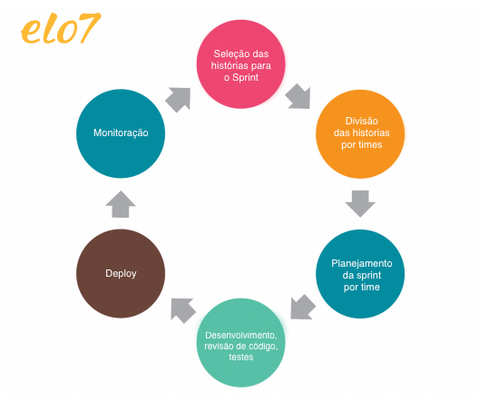
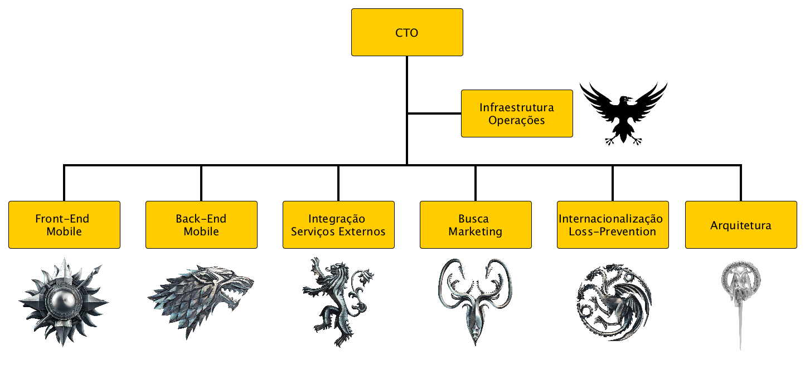
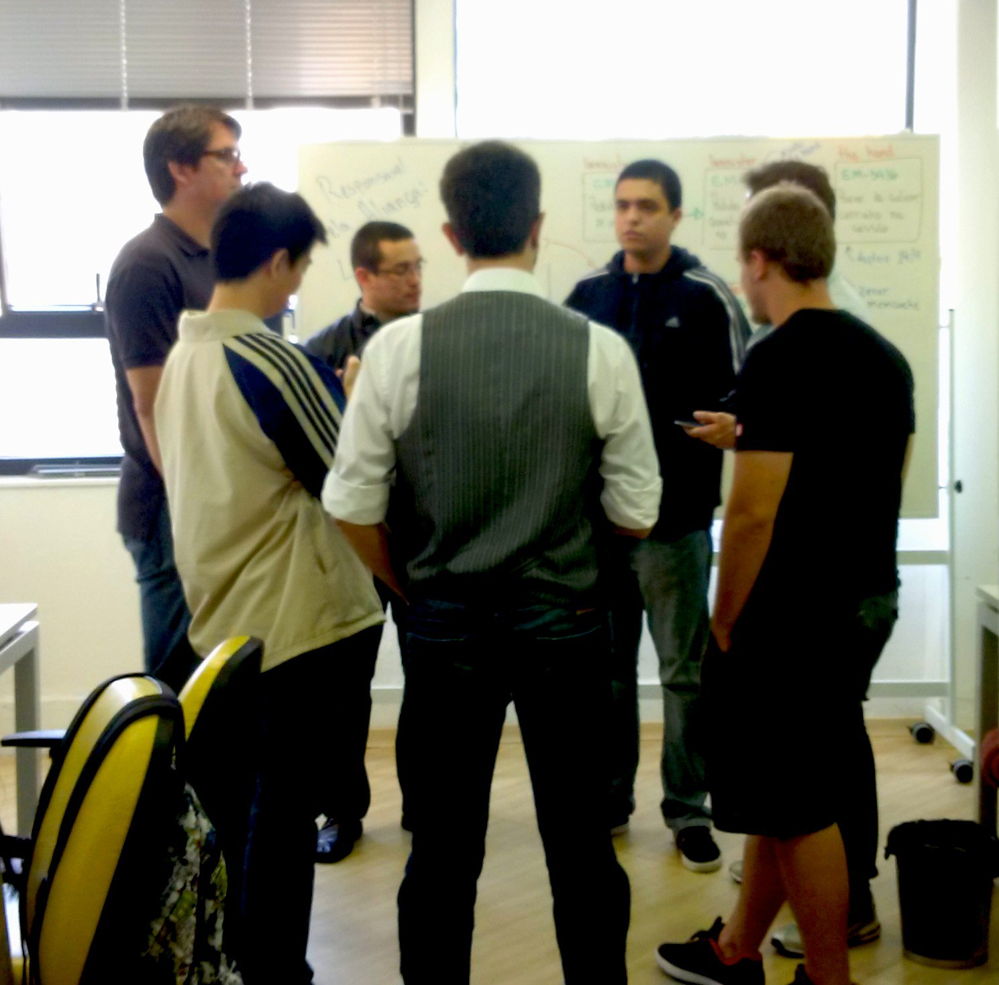
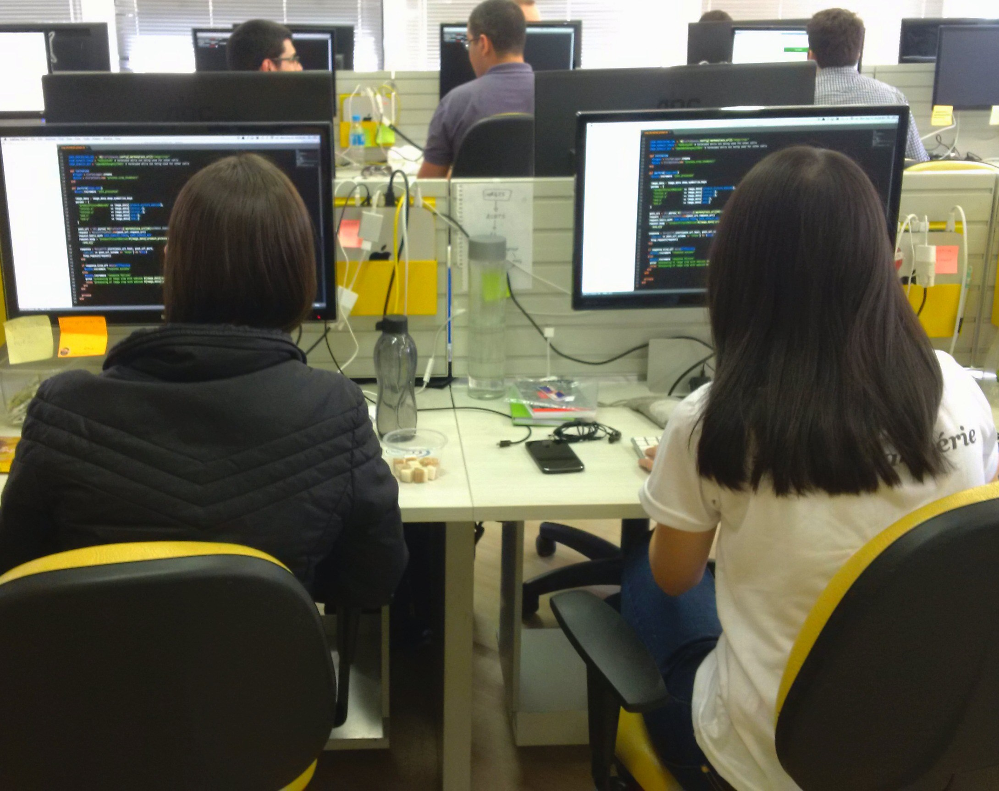
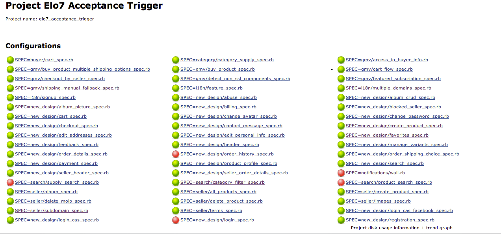
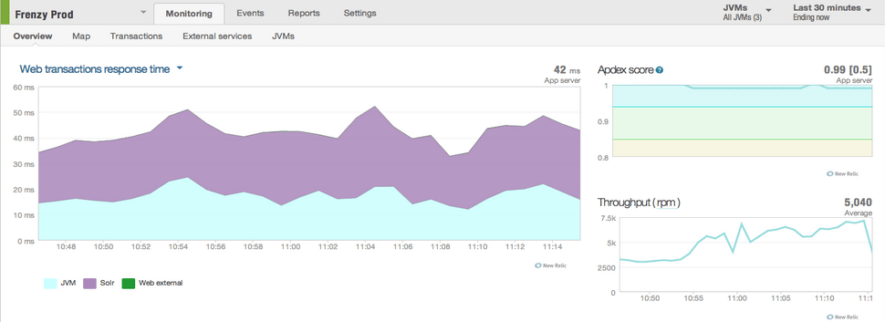

Metodologia ágil no Elo7
Publicado em:
@gustavomaia
Atualmente no mercado existem diversas metodologias de desenvolvimento de software, como: RUP (Processo unificado da Rational), XP (Programação extrema), Scrum e Kanban, entre outras. Essas metodologias seguiram como uma evolução do modelo de desenvolvimento iterativo e incremental.
Todas essas metodologias focam no desenvolvimento ágil que é um conjunto de técnicas utilizadas no desenvolvimento de software. A idéia de desenvolvimento ágil é simples:
Valorizar indivíduos e a interação entre eles, entregar software funcionando, responder rapidamente a mudanças e ter colaboração entre todas as partes envolvidas norteando nossas decisões.
A idéia aqui não é focar necessariamente em adicionar um novo conjunto significativo de funcionalidades, mas sim focar em pequenas histórias que entreguem valor para os nossos usuários.
As principais características dos métodos ágeis são:
- Ciclo de vida iterativo, as fases vão se repetindo a cada ciclo entregando versões intermediárias, até atingir uma versão final do software;
- O cliente/usuário é a peça chave no projeto ele tem uma participação constante detalhando e aprovando os requisitos;
- A burocracia com a documentação é menor;
- Os profissionais envolvidos tem liberdade em desenvolver as tarefas;
- Em outros modelos as mudanças só acontecem depois da versão final do software, na metodologia ágil, as mudanças podem acontecer com frequência antes de entregar a versão final;
- Foco na simplicidade.
Umas das metodologias mais populares é o Scrum, e aqui no Elo7 aplicamos uma adaptação do Scrum em nosso dia-a-dia. Temos pequenos ciclos onde entregamos vários releases, estes ciclos são chamados de sprints no Scrum. No nosso caso não temos a entrega de um produto final, já que o nosso marketplace está em constante evolução. O que fazemos é entregar diariamente vários releases com melhorias no produto. O nosso ciclo está organizado da seguinte forma:

1 – Seleção das histórias para o Sprint: Ao início de cada sprint, o nosso PO (Product Owner, pessoa responsável pelas decisões que agregam valor ao nosso produto) define as histórias que entrarão em nosso sprint de acordo com o planejamento estratégico.
2 – Divisão das historias por times: Antes do planejamento por time, o PO já com as histórias selecionadas realiza a divisão e define a prioridade com o líder de cada time. No Elo7 nossos times são divididos por responsabilidades: busca; integração com serviços externos; internacionalização; front-end; API interna; operações e infraestrutura; e uma equipe especial de arquitetura, que funciona horizontalmente. Cada time leva um nome de uma casa de Game of Thrones.

3 – Planejamento da sprint por time: Cada time começa seu planning sabendo quais histórias irão atacar. Durante o planning as histórias são discutidas e votadas "uma a uma" utilizando planning poker. Primeiro definimos qual história será votada, então, é aberta uma contagem para que cada integrante da equipe mostre a pontuação que acredita ser necessária para realizar a história. Antes de definir o valor da mesma, caso haja divergência de pontos durante a votação, é aberto um debate entre quem deu o menor e o maior valor e, após o consenso entre ambos, uma nova votação é realizada. Uma vantagem da utilização do planning poker é minimizar a influência na decisão entre participantes.
4 – Desenvolvimento, revisão de código, testes: Uma das técnicas do desenvolvimento ágil é a programação em par. Aqui no Elo7 incentivamos a programação em par sempre que necessário. Para acompanhar o andamento de nossas tarefas realizamos reuniões diárias, onde cada integrante fala o que foi realizado no dia anterior e o que planeja trabalhar durante o dia. Utilizamos uma branch da master para desenvolver cada história e, finalizada a história, é feito um pull-request para que outra dupla possa fazer o code-review. A idéia é: quem desenvolveu a história não revisa o código, assim a história passa por quatro mãos e evita "testes viciados".
 
**5 – Deploy: **Em nosso ambiente utilizamos o git para versionamento de arquivos, quando "mergeamos" as histórias aprovadas pelo code-review, se inicia o processo de testes de aceitação em uma cópia do nosso ambiente de produção (integration) . Quando todos os testes são aprovados, iniciamos o deploy em nosso ambiente de produção que automaticamente aplica as alterações em todos os servidores, gerando uma nova versão do software.

6 – Monitoração: Com a história em produção, acompanhamos os relatórios do marketplace para verificar se houve algum impacto, positivo ou negativo. Na realidade esta fase se estende em todo o Sprint, todos os times acompanham as ferramentas que utilizamos para monitoramento diário.

7 – Retrospectiva: Ao final de cada sprint, para identificar os pontos positivos e negativos realizamos uma retrospectiva. Cada time realiza uma "retrô" a sua maneira, algumas vezes ocorre o intercâmbio entre líderes, assim, mantemos uma dinâmica diferente a cada reunião. O principal foco é: integrar os times, avaliar o nível de satisfação, identificar perfis, otimizar os processos e "lavar a roupa suja". Em relação aos problemas, também são discutidas possíveis soluções que podemos abordar em sprints futuras
Fellyph Cintra e Gustavo Maia.